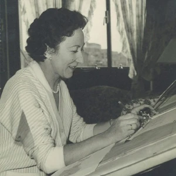

Casa Oswald
Fue la primera mujer licenciada en arquitectura en España y la única mujer miembro de la Junta del Gobierno del Colegio de Arquitectos de Madrid en el año 1936. Entre sus principales obras podemos mencionar la Casa Oswald y las Librerías Turner e Hispano-Argentina en Madrid. En el año 2004 recibió el Premio Nacional de Arquitectura.
Matilde Ucelay nació en Madrid en 1843. Su padre era abogado y su madre miembro de un grupo de teatro universitario. Era la mayor de sus hermanas. asistió al instituto Escuela para estudiar bachillerato y también estudió la arrera de piano. En 1927 empezó la carrera en la Escuela de Arquitectura de Madrid.acabó la carrera en 1936. En julio de 1936, recibió en el Hotel Nacional el homenaje a la primera licenciada en arquitectura de España. como pertenecía a la Junta de Gobierno del colegio de Arquitectos, fue juzgada y acusada de "auxilio a la rebelión". La mayor parte de sus obras fueron viviendas y estuvo trabajando casi hasta los 80 años. Falleció en Noviembre de 2008.
 AQUÍ PUEDES VER NOTICIAS EN DIVERSOS PERIÓDICOS
He cogido a Matilde Ucelay como una de las personas importantes para mí ya que fue la primera persona licenciada en arquitectura en España y a mi me gusta mucho la arquitectura. me parece un paso muy importantes, porque hasta entonces todos los arquitectos eran hombres